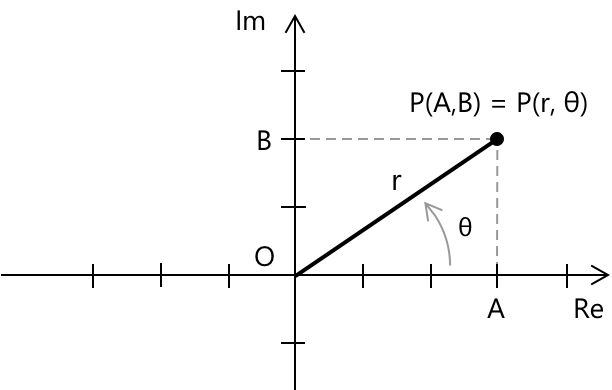
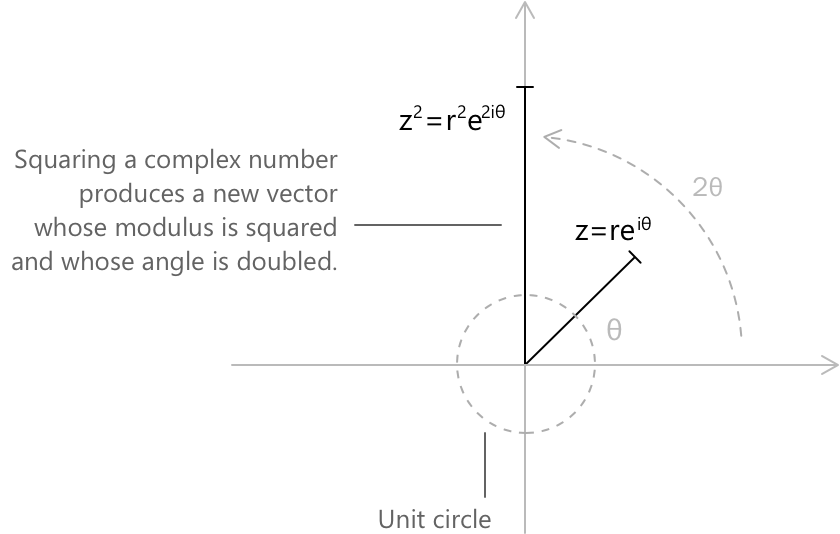

Комплексні числа в експоненціальній формі
Вступ
Хоча алгебраїчна форма \( z = a + bi \) є найбільш знайомим представленням комплексних чисел, альтернативним і часто більш потужним способом їх вираження є їхня експоненціальна форма:
\[z = r e^{i\theta}\]
Величини, що з'являються в цьому виразі, мають наступне значення:
-
\( r = |z| = \sqrt{a^2 + b^2} \) — це модуль, що представляє відстань від \( z \) до початку координат на комплексній площині.
-
\( \theta = \arg(z) \) — це аргумент, кут у радіанах між додатньою дійсною віссю та вектором, що представляє \( z \).
-
\( r \) та \( \theta \) зберігають свої відповідні інтерпретації з тригонометричного представлення комплексного числа.

Точка \( P \) може бути представлена або в прямокутних координатах \( (a, b) \), або в полярних координатах \( (r, \theta) \). Ця дуальність підкреслює зв'язок між алгебраїчним та геометричним поглядами на комплексні числа.
Рівняння \(z = r e^{i\theta}\) випливає безпосередньо з формули Ейлера:
\[e^{i\theta} = \cos\theta + i\sin\theta\]
Ця тотожність показує, що експоненціальне представлення еквівалентне тригонометричній формі: \[z = r(\cos\theta + i\sin\theta)\]
Формула Ейлера може бути встановлена шляхом розкладання \( e^{ix} \), \( \cos x \) та \( \sin x \) у ряди Тейлора та зауваження, що ряд для \( e^{ix} \) природно розпадається на дійсну та уявну частини: \[ e^{ix} = \sum_{n=0}^{\infty} \frac{(ix)^n}{n!} = \cos x + i\sin x \]
Дано комплексне число \( z = a + bi \), його комплексним спряженим визначено як:
\[\overline{z} = a - bi\]
В експоненціальній формі спряжене до \( z = r e^{i\theta} \) отримуємо шляхом зміни знака аргументу на протилежний:
\[\overline{z} = r e^{-i\theta}\]
Формула містить число Ейлера \( e \), фундаментальну сталу в математиці. Щоб зрозуміти його походження, можна звернутися до теми Число Ейлера як границя послідовності, де воно виникає як границя послідовності.
Геометрично це відповідає відображенню \( z \) відносно дійсної осі на комплексній площині.
Як виразити комплексне число в експоненціальній формі
Дано комплексне число \( z = a + bi \), перетворення в експоненціальну форму відбувається наступним чином.
-
Обчислити модуль \( z \) згідно з означенням: \[r = \sqrt{a^2 + b^2}\]
-
Визначити аргумент \( \theta \), тобто кут, який вектор, що представляє \( z \), утворює з додатною дійсною віссю. Коли \( a > 0 \), можна використовувати формулу: \[\theta = \tan^{-1}\!\left(\frac{b}{a}\right)\] Коли \( a \leq 0 \), необхідно врахувати чверть, у якій лежить \( z \), щоб вибрати правильне значення \( \theta \).
-
Записати \( z \) в експоненціальній формі, застосувавши формулу Ейлера: \[z = r e^{i\theta}\]
Аргумент комплексного числа не визначений однозначно: якщо \( \theta \) є аргументом \( z \), то ним також є \( \theta + 2k\pi \) для будь-якого цілого \( k \). Точніше, маємо:
\[z = r e^{i(\theta + 2k\pi)}\] \[k \in \mathbb{Z}\]
Експоненціальне представлення, таким чином, не є унікальним; воно визначене з точністю до \( 2\pi \). Щоб усунути цю неоднозначність, зазвичай вибирають головний аргумент, що позначається \( \text{Arg}(z) \), який задовольняє умову:
\[ -\pi < \text{Arg}(z) \leq \pi \]
Якщо не зазначено інше, під аргументом розуміють головний аргумент.
Приклад 1
Розглянемо комплексне число \( z = 2 + 3i \) та його перетворення в експоненціальну форму. Модуль обчислюється шляхом прямого застосування означення. Оскільки \( a = 2 \) та \( b = 3 \), отримаємо: \[ \begin{align} r = |z| &= \sqrt{a^2 + b^2} \\[6pt] &= \sqrt{2^2 + 3^2} \\[6pt] &= \sqrt{4 + 9} \\[6pt] &= \sqrt{13} \end{align} \] Аргумент \( \theta \) — це кут, який вектор, що представляє \( z \), утворює з додатною дійсною віссю. Оскільки \( a = 2 > 0 \), число лежить у першій чверті, і формула арктангенса застосовується без коригування: \[ \theta = \tan^{-1}\!\left(\frac{b}{a}\right) = \tan^{-1}\!\left(\frac{3}{2}\right) \approx 0.98 \text{ рад} \]
Підставивши \( r = \sqrt{13} \) та \( \theta \approx 0.98 \) в експоненціальну форму, отримаємо результат: \[ z = \sqrt{13}\, e^{\,i \cdot 0.98} \]
Приклад 2
Розглянемо комплексне число \( z = -1 + i \) та його перетворення в експоненціальну форму. Модуль обчислюється за допомогою означення. Оскільки \( a = -1 \) та \( b = 1 \), отримаємо: \[ \begin{align} r = |z| &= \sqrt{(-1)^2 + 1^2} \\[6pt] &= \sqrt{1 + 1} \\[6pt] &= \sqrt{2} \end{align} \]
З означенням аргументу потрібно бути обережнішим. Оскільки \( a = -1 < 0 \) та \( b = 1 > 0 \), число лежить у другій чверті. Використання лише формули арктангенса дало б: \[ \tan^{-1}!\left(\frac{b}{a}\right) = \tan^{-1}\!\left(\frac{1}{-1}\right) = \tan^{-1}(-1) = -\frac{\pi}{4} \] що відповідає четвертій чверті і, отже, є неправильним. Правильний аргумент отримують, додавши \( \pi \): \[ \theta = -\frac{\pi}{4} + \pi = \frac{3\pi}{4} \]
Підставивши \( r = \sqrt{2} \) та \( \theta = \dfrac{3\pi}{4} \) в експоненціальну форму, отримаємо результат: \[ z = \sqrt{2}\, e^{\,i \frac{3\pi}{4}} \]
Властивості експоненціальної форми
Однією з головних переваг експоненціальної форми є спрощення операцій множення, ділення та піднесення до степеня комплексних чисел. Дано два комплексних числа \( z_1 = r_1 e^{i\theta_1} \) та \( z_2 = r_2 e^{i\theta_2} \), їхній добуток отримують шляхом множення модулів та додавання аргументів: \[ z_1 z_2 = r_1 r_2\, e^{i(\theta_1 + \theta_2)} \]
Як конкретну ілюстрацію, розглянемо \( z_1 = 2e^{i\pi/3} \) та \( z_2 = 3e^{i\pi/6} .\) Їхній добуток дорівнює: \[ z_1 z_2 = 2 \cdot 3\, e^{i(\pi/3 + \pi/6)} = 6\, e^{i\pi/2} \] Модуль добутку дорівнює \( 6 \), а його аргумент — \( \pi/2 \), що відповідає напрямку уявної одиниці на комплексній площині.
Аналогічно, за умови \( z_2 \neq 0 \), частка отримується шляхом ділення модулів та віднімання аргументів: \[ \frac{z_1}{z_2} = \frac{r_1}{r_2}\, e^{i(\theta_1 - \theta_2)} \] Обидві операції відповідають простим геометричним перетворенням на комплексній площині: розтягуванню та повороту. Цілі степені обробляються з такою ж ефективністю. Для будь-якого цілого числа \( n \) правила піднесення до степеня дають безпосередньо: \[ z^n = \left(r e^{i\theta}\right)^n = r^n e^{in\theta} \] Модуль підноситься до степеня \( n \), а аргумент множиться на \( n \). Застосовуючи формулу Ейлера до \( e^{in\theta} \), це стає еквівалентним теоремі де Муавра: \[ (\cos\theta + i\sin\theta)^n = \cos(n\theta) + i\sin(n\theta) \] Як ілюстрацію, піднесення \( z = re^{i\theta} \) до квадрата дає: \[ z^2 = r^2 e^{i2\theta} \]

Отримане комплексне число має модуль \( r^2 \) та аргумент \( 2\theta \). Геометрично вектор розтягується у \( r^2 \) разів і повертається на кут, що вдвічі перевищує початковий.
Корені в експоненціальній формі
Експоненціальна форма забезпечує природну основу для обчислення \( n \)-их коренів комплексного числа. Дано \( z = re^{i\theta} \), розв'язання рівняння \(w^n = z\) — це рівно \( n \) різних комплексних чисел, які задаються як: \[w_k = \sqrt[n]{r}\, e^{i(\theta + 2k\pi)/n}\] \[k = 0, 1, \ldots, n-1\] Модуль кожного кореня дорівнює \( \sqrt[n]{r} \), тоді як аргументи рівномірно розподілені з кроком \( 2\pi/n \). Геометрично \( n \) коренів відповідають вершинам правильного багатокутника, вписаного в коло радіуса \( \sqrt[n]{r} \) на комплексній площині.
Як приклад, розглянемо кубічні корені з \( z = 8 \). Записуючи \( z = 8e^{i \cdot 0} \), маємо \( r = 8 \) та \( \theta = 0 \), отже три корені такі:
\[w_k = \sqrt[3]{8}\, e^{i \cdot 2k\pi/3} = 2\, e^{i \cdot 2k\pi/3}\] \[k = 0, 1, 2\]
Явно маємо:
\[ \begin{align} w_0 &= 2e^{i \cdot 0} = 2 \\[6pt] w_1 &= 2e^{i \cdot 2\pi/3} = 2\!\left(-\frac{1}{2} + i\frac{\sqrt{3}}{2}\right) = -1 + i\sqrt{3} \\[6pt] w_2 &= 2e^{i \cdot 4\pi/3} = 2\!\left(-\frac{1}{2} – i\frac{\sqrt{3}}{2}\right) = -1 - i\sqrt{3} \end{align} \]